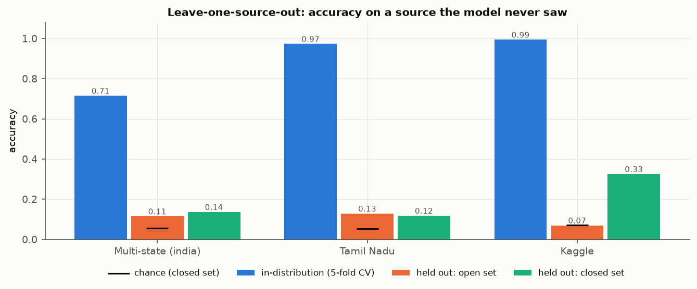
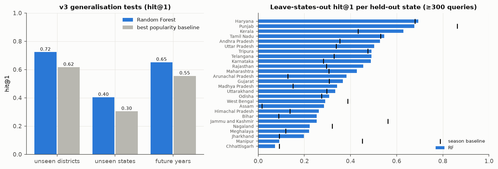

A newsletter on data-driven crop recommendation for Indian fields
Three versions of a crop advisor, each tested harder than the one before. This issue explains why AgroMind's headline accuracy went down as the project got better, and why that is the result we are proudest of.
Choosing what to sow is one of the most consequential decisions an Indian farmer makes each season. Published crop recommenders mostly learn a mapping from soil nitrogen (N), phosphorus (P), potassium (K), pH, temperature, humidity and rainfall to a crop name, and many report accuracies close to 99% [8], [11], [12]. Most of those numbers come from one public Kaggle dataset that, by its own description, was built by augmenting Indian data [31].
v1 was such a model: 2,200 Kaggle rows, 22 crops, a reported 98.00% accuracy. Re-running it, we found a decoding flaw, and that a simple box-lookup rule already scores 88% on that data. v2 merged three sources into 67,200 rows covering 74 crops, and added soil type, season and state as inputs. It scores 94.33% on a 5-fold test and 99.18% when the right crop only has to appear in its top three. But trained on two sources and tested on the third, its accuracy collapses to 7–13%.
v3 starts again from official records: 4,00,379 district–season–year crop production rows published by the Government of India [30], [38], joined with NASA POWER climate [29] and SoilGrids soil data [27]. On districts it has never seen, its first suggestion is one of that district's best-yielding crops 72.66% of the time, and one of its top three is 93.53% of the time. That beats a strong "what does this state usually grow this season" baseline.
| v1 (original) | v2 (merged) | v3 (Govt. records) | |
|---|---|---|---|
| Training data | 2,200 rows · 22 crops Kaggle only | 67,200 rows · 74 crops 3 merged sources | 4,00,379 APY rows · 49 crops 748 districts · 26 crop years |
| Inputs | 7 numeric | 7 numeric + soil, season, state | NASA POWER climate, season, state, location (+ soil) |
| Headline score | 98.00% one 75/25 split, as reported | 94.33 ± 0.12% 5-fold accuracy | 72.66% hit@1, unseen districts |
| Top-3 | not reported | 99.18% | 93.53% hit@3, unseen districts |
| Simple baseline | 88% box-lookup rule | — | 61.69% / 88.26% state × season popularity |
| Hardest honest test | 86.91% GaussianNB exact match (97.09% reported) | 7.0–12.9% leave-one-source-out | 40.40% / 65.20% unseen states / future years |
All figures from docs/research/results.json. v1 to v3 answer increasingly hard
questions, so the headline numbers are not directly comparable; the bottom row is the fair one to read.
Methodology
v1 trained on the Kaggle Crop Recommendation set [31]: 2,200 rows of N, P, K, pH, temperature, humidity and rainfall, exactly 100 per crop. v2 merges it with an 8,000-row, 16-state India set and 57,000 Tamil Nadu field records. Thirty-four free-text soil descriptions are folded into 10 soil classes, and spelling variants (bengalgram → chickpea, gingely → sesame) reduce 100+ crop labels to 74. The deployed model is a 300-tree Random Forest [21] with one-hot soil, season and state, built in scikit-learn [34].
The Directorate of Economics and Statistics publishes area and production for every district, season, year and crop [30]. Our v3 dataset takes the official DES report for 1997–98 to 2022–23 [38], cross-checked against a community copy [36]: 4,00,379 rows across 37 states and union territories and 748 districts. Each district is matched to its centre point to attach seasonal temperature, humidity and rainfall from NASA POWER [29] and topsoil pH, nitrogen and texture from SoilGrids 2.0 [27]. A crop is labelled "recommended" for a district, season and year if it is among that query's top three by yield percentile, giving 43,998 queries over 49 crops.
From the Literature
We reviewed 38 sources (every citation checked), with an emphasis on Indian work. Early Indian systems used majority-vote ensembles over soil data [6], [8] and added sowing season and location [7], [9]. Recent work on the Kaggle dataset reports 98–99.6% precision or accuracy with XGBoost and Bayesian classifiers [11], [12]. Explainable systems such as XAI-CROP and AgroXAI attach SHAP and LIME explanations [14], [15], [23].
Studies on real Indian data paint a different picture. On 20 years of data from 247 rice districts, the best out-of-sample R² was 0.82 [16]. The one crop-recommendation study with a time-ordered split saw Random Forest fall from 99.96% to 78.55% [37]. None of the studies in the table below tests on unseen states or districts, and none reports whether its confidence figures can be trusted.
| Ref | Study | Data | Method | Reported | Gap AgroMind targets |
|---|---|---|---|---|---|
| [6] | Pudumalar et al., 2017 | Soil data, Tamil Nadu | Vote ensemble | "High accuracy" | Single region, random split |
| [7] | Doshi et al., 2018 | Soil, weather, location | ML classifiers | — | No unseen-region test |
| [8] | Kulkarni et al., 2018 | Soil + rainfall, temp. | RF + NB + SVM vote | 99.91% | Near-ceiling random split |
| [11] | Dey et al., 2024 | Kaggle set | XGBoost, RF, SVM | 99.09% | No location / season |
| [12] | Elbasi et al., 2023 | Soil–climate crops | 15 classifiers | 99.59% | No out-of-distribution test |
| [14] | Shams et al., 2024 | Soil, weather | XAI-CROP | MSE 0.94 | No calibration |
| [37] | Sam & D'Abreo, 2025 | 19 crops, 15 states | RF, SVM | 99.96% → 78.55% | Holds out time, not states |
| [16] | De Clercq & Mahdi, 2024 | 247 districts, 20 yrs | 19 regressors | R² ≤ 0.82 | Real-data ceiling (yield) |
Evaluation
v1 trained one yes/no classifier per crop and took the strongest. We reproduced its reported scores exactly, but on up to 3.09% of test rows no classifier said yes, and on up to 13.09% several did. Those rows were silently assigned to the first crop, apple. GaussianNB's reported 97.09% falls to 86.91% when each row must have exactly one answer. Retrained as a proper multiclass model, Random Forest reaches 99.50 ± 0.30% on the Kaggle data, where a fixed lookup table already gets 88%.
On the merged data the deployed Random Forest is the best of 10 models: 94.33 ± 0.12% accuracy, 92.15% macro-F1 and 99.18% top-3. Season is the most important input (shuffling it costs 55 points of accuracy). Adding soil, season and state raises accuracy on the multi-state rows from 32.22% to 71.50%. But when one whole source is held out, accuracy falls to 7.0–12.9%, only a few points above chance. The three sources describe the same crops so differently that a model fitted to one tells us little about the others.
With whole districts held out, the best model's first suggestion is a top-yielding crop 72.66% of the time (93.53% within its top three), against 61.69% / 88.26% for a baseline that simply recommends what the state grows most that season. The advantage persists for future years (65.20% vs 55.49% when trained up to 2014 and tested on 2015–2022) and for states it has never seen (40.40% vs 30.46% for a season-popularity baseline). These are lower numbers than v2's, but they answer the question a farmer actually asks.
The deployed v2 model's average confidence is 87.04%, but it is right 94.62% of the time (Expected Calibration Error 0.076). It is therefore under-confident, consistent with what is known about Random Forest probabilities [20]. A recalibration step would make the percentage shown in the app match how often it is right.


v4 asks "which crops yield best here?" instead of "which crop is this?". YieldRank, a learning-to-rank model (LightGBM LambdaMART [35]), orders the 49 crops for each district, season and year in 259,181 Government records (1997–2022, 43,443 queries). Here hit@1 means the top-ranked crop is the best-yielding one, a stricter test than v3's. On states it has never seen, YieldRank's first pick is the best crop 55.7% of the time against 39.2% for the best classifier (MLP; +16.5 points, p < 10−300).
It also returns a conformal prediction set: a shortlist meant to contain the best crop 90% of the time. On unseen states, with i.i.d. calibration, the sets achieve 90.0% coverage with 2.87 crops on average, but only 74.8% in the worst state (Telangana). For a Random Forest on unseen states, calibrating on held-out training states instead of i.i.d. data lifts coverage from 75.4% to 89.5%.
The honest caveat: simply repeating last year's best crop scores 54.5%, almost as high. YieldRank's clear advantage is on the 39.7% of cases with no usable history: 47.5% against 42.6%.
| Unseen states | Hit@1 | NDCG@3 |
|---|---|---|
| YieldRank (ours) | 55.7% | 0.922 |
| MLP (best classifier) | 39.2% | 0.838 |
| Last-year persistence | 54.5% | 0.909 |
Leave-states-out over 36 states, 43,443 district–season–years. For contrast, a Random Forest scores 99.5% on a random split of the Kaggle set.
Paper in preparation: "Beyond 99%: Yield-Grounded Crop Ranking with Conformal Prediction Sets, Evaluated on Unseen Indian States and Years", targeting IATMSI-2027 (IEEE).
Future work
The Team
Head of Department: [HoD Name] · Project Coordinator: [Coordinator Name] · Contact: [email@college.edu]
Disclaimer: AgroMind is an academic project. v1 and v2 are trained on public and partly synthetic datasets; v3 uses official production statistics with interim soil data. Recommendations are for education and demonstration only and are not validated agronomic advice.
References
Numbers follow the full literature review
(docs/research/LITERATURE.md, 38 sources); only works cited in this issue are listed.
[6] S. Pudumalar, E. Ramanujam, R. H. Rajashree, C. Kavya, T. Kiruthika, and J. Nisha, "Crop recommendation system for precision agriculture," in Proc. 8th Int. Conf. Advanced Computing (ICoAC), 2017, pp. 32–36, doi: 10.1109/ICoAC.2017.7951740.
[7] Z. Doshi, S. Nadkarni, R. Agrawal, and N. Shah, "AgroConsultant: Intelligent crop recommendation system using machine learning algorithms," in Proc. 4th Int. Conf. Computing Communication Control and Automation (ICCUBEA), 2018, pp. 1–6, doi: 10.1109/ICCUBEA.2018.8697349.
[8] N. H. Kulkarni, G. N. Srinivasan, B. M. Sagar, and N. K. Cauvery, "Improving crop productivity through a crop recommendation system using ensembling technique," in Proc. 3rd Int. Conf. Computational Systems and Information Technology for Sustainable Solutions (CSITSS), 2018, pp. 114–119, doi: 10.1109/CSITSS.2018.8768790.
[9] A. Priyadharshini, S. Chakraborty, A. Kumar, and O. R. Pooniwala, "Intelligent crop recommendation system using machine learning," in Proc. 5th Int. Conf. Computing Methodologies and Communication (ICCMC), 2021, pp. 843–848, doi: 10.1109/ICCMC51019.2021.9418375.
[11] B. Dey, J. Ferdous, and R. Ahmed, "Machine learning based recommendation of agricultural and horticultural crop farming in India under the regime of NPK, soil pH and three climatic variables," Heliyon, vol. 10, no. 3, p. e25112, 2024, doi: 10.1016/j.heliyon.2024.e25112.
[12] E. Elbasi et al., "Crop prediction model using machine learning algorithms," Appl. Sci., vol. 13, no. 16, p. 9288, 2023, doi: 10.3390/app13169288.
[14] M. Y. Shams, S. A. Gamel, and F. M. Talaat, "Enhancing crop recommendation systems with explainable artificial intelligence: A study on agricultural decision-making," Neural Comput. Appl., vol. 36, no. 11, pp. 5695–5714, 2024, doi: 10.1007/s00521-023-09391-2.
[15] Ö. Turgut, İ. Kök, and S. Özdemir, "AgroXAI: Explainable AI-driven crop recommendation system for Agriculture 4.0," in Proc. IEEE Int. Conf. Big Data (BigData), 2024, pp. 7208–7217, doi: 10.1109/BigData62323.2024.10825771.
[16] D. De Clercq and A. Mahdi, "Feasibility of machine learning-based rice yield prediction in India at the district level using climate reanalysis and remote sensing data," Agric. Syst., vol. 220, p. 104099, 2024, doi: 10.1016/j.agsy.2024.104099.
[18] D. R. Roberts et al., "Cross-validation strategies for data with temporal, spatial, hierarchical, or phylogenetic structure," Ecography, vol. 40, no. 8, pp. 913–929, 2017, doi: 10.1111/ecog.02881.
[20] A. Niculescu-Mizil and R. Caruana, "Predicting good probabilities with supervised learning," in Proc. 22nd Int. Conf. Machine Learning (ICML), 2005, pp. 625–632, doi: 10.1145/1102351.1102430.
[21] L. Breiman, "Random forests," Mach. Learn., vol. 45, no. 1, pp. 5–32, 2001, doi: 10.1023/A:1010933404324.
[22] T. Chen and C. Guestrin, "XGBoost: A scalable tree boosting system," in Proc. 22nd ACM SIGKDD Int. Conf. Knowledge Discovery and Data Mining, 2016, pp. 785–794, doi: 10.1145/2939672.2939785.
[23] S. Lundberg and S.-I. Lee, "A unified approach to interpreting model predictions," in Advances in Neural Information Processing Systems 30 (NeurIPS), 2017; arXiv:1705.07874, doi: 10.48550/arXiv.1705.07874.
[24] A. A. Reddy, "Impact study of Soil Health Card scheme," National Institute of Agricultural Extension Management (MANAGE), Hyderabad, India, 2020, doi: 10.31220/osf.io/n3d2m.
[25] Department of Agriculture and Farmers Welfare, Government of India, "Soil Health Card portal." [Online]. Available: https://soilhealth.dac.gov.in/ (accessed Nov. 22, 2026).
[27] L. Poggio et al., "SoilGrids 2.0: Producing soil information for the globe with quantified spatial uncertainty," SOIL, vol. 7, no. 1, pp. 217–240, 2021, doi: 10.5194/soil-7-217-2021.
[29] NASA Langley Research Center, "POWER: Prediction Of Worldwide Energy Resources." [Online]. Available: https://power.larc.nasa.gov/ (accessed Nov. 22, 2026).
[30] Directorate of Economics and Statistics, MoA&FW, Government of India, "District-wise, season-wise crop production statistics from 1997," Open Government Data (OGD) Platform India. [Online]. Available: https://www.data.gov.in/resource/district-wise-season-wise-crop-production-statistics-1997 (accessed Nov. 22, 2026).
[31] A. Ingle, "Crop Recommendation Dataset," Kaggle, 2020. [Online]. Available: https://www.kaggle.com/datasets/atharvaingle/crop-recommendation-dataset (accessed Nov. 22, 2026).
[32] T. G. Dietterich, "Approximate statistical tests for comparing supervised classification learning algorithms," Neural Comput., vol. 10, no. 7, pp. 1895–1923, 1998, doi: 10.1162/089976698300017197.
[33] C. Guo, G. Pleiss, Y. Sun, and K. Q. Weinberger, "On calibration of modern neural networks," in Proc. 34th Int. Conf. Machine Learning (ICML), 2017; arXiv:1706.04599, doi: 10.48550/arXiv.1706.04599.
[34] F. Pedregosa et al., "Scikit-learn: Machine learning in Python," J. Mach. Learn. Res., vol. 12, no. 85, pp. 2825–2830, 2011. [Online]. Available: https://www.jmlr.org/papers/v12/pedregosa11a.html
[35] G. Ke et al., "LightGBM: A highly efficient gradient boosting decision tree," in Advances in Neural Information Processing Systems 30 (NIPS), 2017. [Online]. Available: https://papers.nips.cc/paper/2017/hash/6449f44a102fde848669bdd9eb6b76fa-Abstract.html
[36] pyatakov, "India Agriculture Crop Production: District-wise crop area and production 1997–2021 (updated Feb. 2023)," Kaggle. [Online]. Available: https://www.kaggle.com/datasets/pyatakov/india-agriculture-crop-production (accessed Nov. 22, 2026).
[37] S. Sam and S. M. D'Abreo, "Crop recommendation with machine learning: Leveraging environmental and economic factors for optimal crop selection," arXiv:2505.21201, 2025, doi: 10.48550/arXiv.2505.21201.
[38] Directorate of Economics and Statistics, MoA&FW, Government of India, "Area, Production & Yield (APY) – Reports." [Online]. Available: https://data.desagri.gov.in/website/crops-apy-report-web (accessed Nov. 22, 2026).